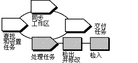

| 工具向导：将 UCM 变更集与 Rational ClearCase 一起使用 |
 |
|
主要描述
概述下图说明了 UCM 工作流程。此工具向导中讨论了加阴影的区域。 UCM 工作流程 术语注释：ClearCase UCM 活动紧密映射到 RUP 工作单。请勿将其与 RUP 概念活动相混淆。 UCM 活动跟踪处理开发任务时创建的版本。活动包括描述该任务的文本标题、活动创建者的用户标识和标识处理该活动时创建的所有版本的变更集。当准备就绪，可以修改源文件时，必须为活动设置开发视图。 在修改文件之前必须为开发视图设置活动。 此工具向导在运行 Microsoft Windows 时适用。 工具步骤要处理 UCM 活动： 1. 创建或查找并设置活动当在 UCM 项目中检出文件或目录时，会请求您指定一个活动来跟踪工作。 创建新的活动并在当前视图中设置该活动
查找和设置活动在工作会话之间保持活动。遵循这些步骤，查找现有活动并在开发视图中进行设置。 从 ClearCase Explorer：
从 ClearCase 对话框：
2. 检出和修改版本在修改源文件之前，转到“开发”视图并检出源文件。检出操作使文件或目录版本在视图中变为可写。
3. 检入工作当想保留文件当前状态的记录时，请检入该文件。检入文件或目录会向 VOB 添加新的版本。版本信息由当前设置的活动来记录。 在检入之后，视图保持设置为当前的活动。
|
© Copyright IBM Corp. 1987, 2006. All Rights Reserved. |